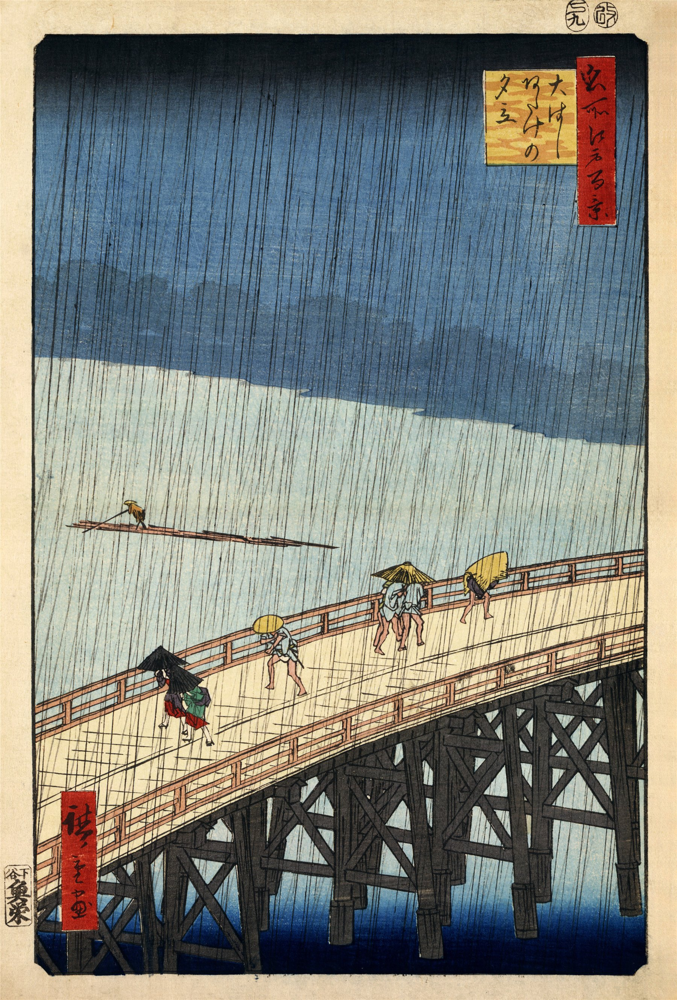

没有闪电，没有雷声，广重只用几百条细细的斜线，就把一场突如其来的暴雨钉在了纸上。桥上的人弓着背、揣着伞往前挤，桥下的船夫却像什么都没发生——这张诞生于1857年的木版画，后来被梵高原样临摹进了油画里，成了浮世绘走向西方现代艺术的一扇窗。
大桥以陡峭的对角线从画面左下角一路斜切向右上角，桥身在下边缘和右边缘都被直接"切断"——这种毫不犹豫的裁切在1857年是相当激进的构图，比后来风靡欧洲的"快照式"摄影构图早了半个世纪，也正是这种大胆的不完整感，让浮世绘之后深深迷住了印象派画家。
桥上五个人物被安排成疏密不一的两组：近景一把黑伞下并排的两人步伐最急，中景独行的一人、远处并肩的两人依次拉开纵深，视线沿着桥面的木纹节奏一步步被送向桥的尽头，也送向那片吞没了地平线的深蓝雨幕。
桥下江面上，一位船夫撑着长篙立在窄筏中央，是全画唯一的水平参照物——他的存在悄悄提醒你：桥面上的仓皇，只是这场雨给行人的感受，江水本身依旧不紧不慢地流着。
整张画的色域窄得惊人——从桥面地面近乎裸色的米白，到江面的浅灰蓝，再到天空顶部近乎墨黑的深靛蓝，全部压在同一个蓝灰色系里，靠明度的连续推移而非色相的跳跃来制造纵深感，这正是"少色也能出画面"的一个极端范例。
在这套克制的冷色底子上，只安放了两处不成比例的暖色：行人斗笠与蓑衣上那一点浓烈的稻草黄，以及画面右上角题字色块里的朱红印章色——冷底暖点的配比被压缩到极致，反而让这两小块暖色异常显眼，成了视线在雨幕里唯一能歇脚的地方。
雨线本身不是"画"上去的颜色，而是用另一块专门雕刻的版单独套印的细线——版画术语称之为"毛雨"：一版粗而长，压在天空区域；一版细而短，叠印在近景桥面上，两版错位叠加，才做出雨丝由远及近逐渐变粗、变密的错觉。
天空那片从深靛蓝到近乎透明的过渡，靠的是浮世绘独有的"晕染"（暈し，bokashi）刷版技法——刻版师傅在同一块木版上，用蘸水量逐渐减少的刷子手工拖出深浅渐变，而非依赖多块色版叠印，这也是为什么每一张早期原版拓印，天空的渐变位置都会有细微差异。
这幅画属于《名所江户百景》系列，是广重晚年（1856–1858年）的收官之作，一共120余幅，由版元鱼屋栄吉出版。系列尚未完稿，广重就于1858年死于那一年席卷江户的霍乱大流行，最后几幅由弟子二代广重补齐。
画中的"新大桥"横跨隅田川，是当时江户城东连接深川的重要桥梁之一，"安宅"则是桥畔一处地名——这类"地名+天气/时刻"的组合标题，是《名所江户百景》全系列共用的命名逻辑，每一幅都在记录一个具体地点在某个瞬间的光景。
这张画最打动人的地方，或许是它精准地捕捉了一种毫无地域差别的瞬间：任何人被雨突然浇到时，那种缩着肩膀、加快脚步的本能反应，广重用几个简化到极致的剪影就说尽了——这是浮世绘美学里"物哀"的日常版本：转瞬即逝的天气，被永远定格。
1887年，梵高在巴黎几乎逐笔临摹了这幅画，画成油画《雨中桥（仿广重）》，甚至连雨线和边框上的汉字都照描不误——这是浮世绘冲击西方"日本主义"（Japonisme）浪潮里最直接的证据之一，也是印象派、后印象派画家（梵高、莫奈、德加）从广重、北斋这批浮世绘大师身上学走大胆构图与平面色块的起点。
歌川广重（1797–1858）是江户末期浮世绘"风景画"（風景画）的集大成者，与葛饰北斎并称浮世绘风景两大宗师。他早年出身消防员世家，后转投浮世绘门下，凭《东海道五十三次》系列一举成名，此后一生几乎都在描绘江户与东海道沿途的四季风物。
《名所江户百景》是他生涯末期投入心血最重的系列，也是他留给后世最完整的江户城市影像档案；他去世后不久，日本就在明治维新中迅速西化，画中记录的许多桥梁、街景早已不复存在，这批版画因此也成了消失的江户城仅存的视觉证词之一。